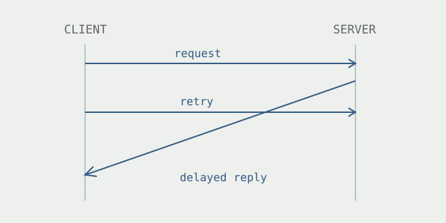

When a retry becomes the bug
A delayed response can be more revealing than a failed request.
A file copy fails with Permission denied. Checking the permissions seems reasonable. But the error names the result, not necessarily the cause.
In Nikhil Jha’s Linux debugging account, rare NFS copy failures led through authentication code to a timing problem. A retried request used a new GSS sequence number, while a delayed response could still correspond to the earlier one. Validation failed, and the resulting retries could keep the failure going.

Make the ordering visible
The useful question becomes: which events must happen in which order? Write down the first request, the timeout, the retry, and each possible response. Then ask what state the client retains at every step.
RFC 2203 explicitly discusses keeping sequence numbers for retransmitted requests so a reply can be checked against the appropriate attempt. A single operation can have several attempts in flight; treating only the latest attempt as relevant loses information.
A useful reproducer should control that ordering. More traffic might expose a rare failure, but deliberately delaying a response tests a narrower hypothesis. Record the request identifiers and state transitions before running the experiment, so an unexpected result has something to explain.
Once a fix appears to work, keep the awkward ordering in the test. Otherwise the next successful run might only mean the response arrived sooner.